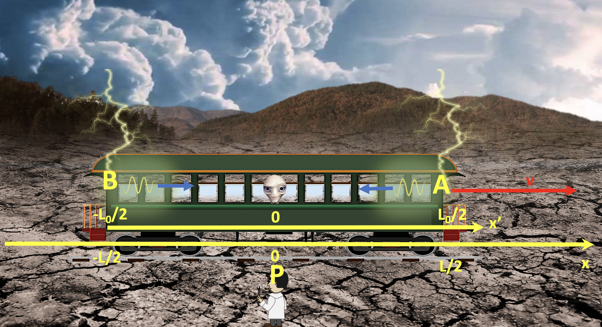

Forrige side🙂 🙁Eksempel 2PADLET

Nå begynner jobben: Ta et stykke papir, lag en tabell med posisjoner og tidspunkter i merket og umerket system for alle tre hendelser. De skal uttrykkes kun ved den kjente størrelsen L samt de ukjente størrelsene L0, tA′ og tB′. Ikke gå videre før du har det.